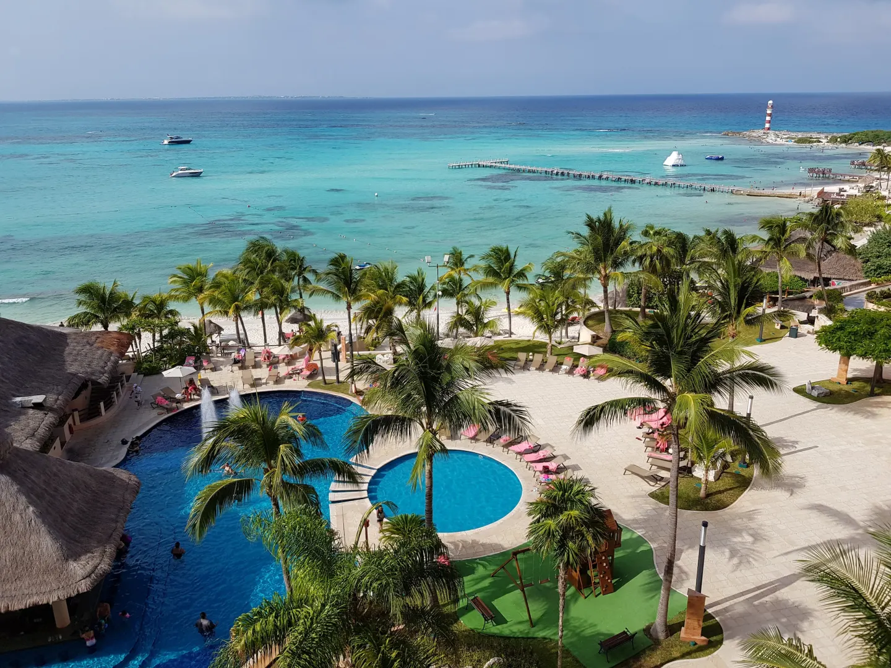
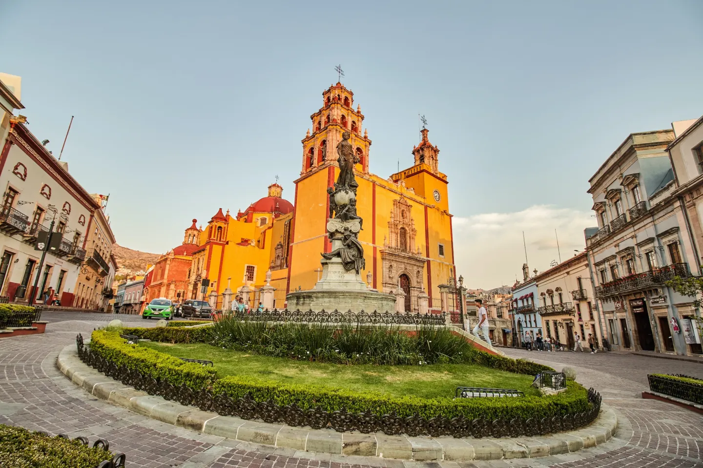
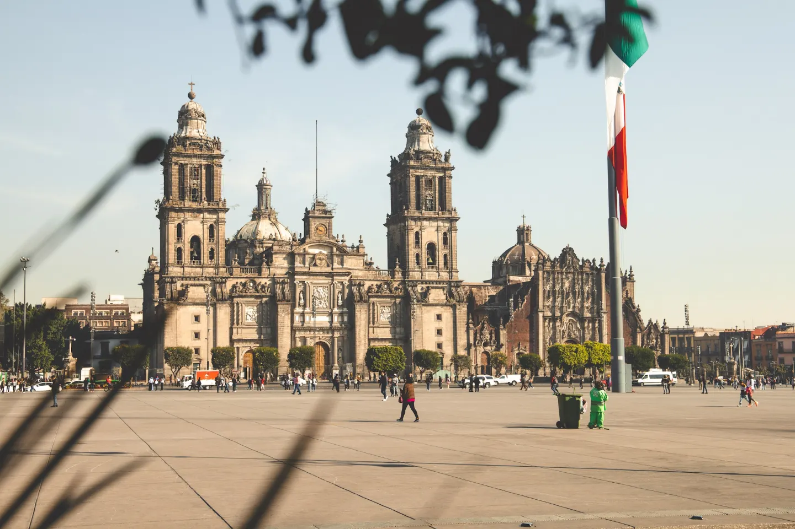
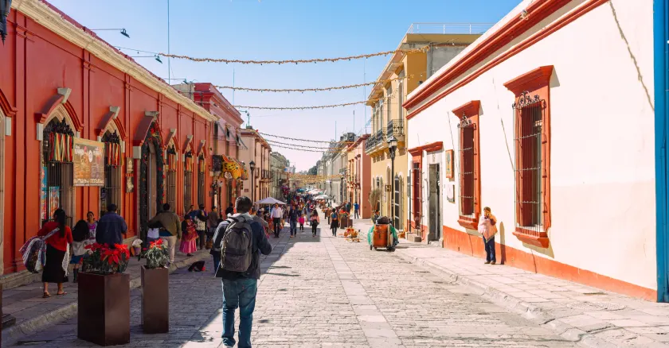
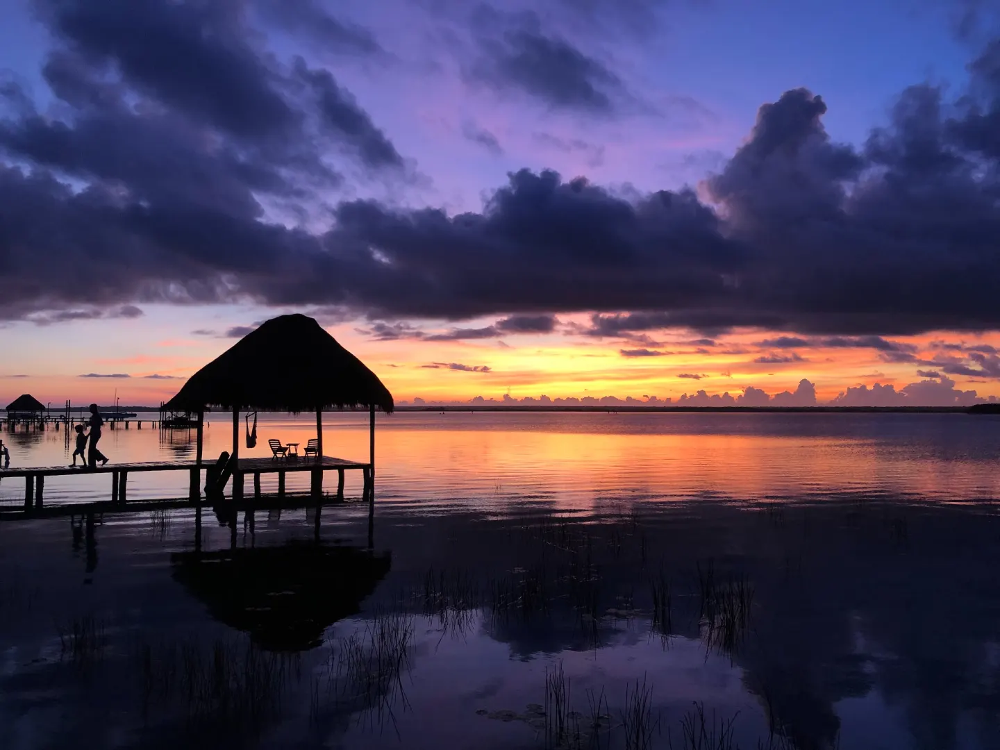

Cancún is what put the Mexican Caribbean on the map, for good reason: Few places offer better white-sand beaches or all-inclusive resorts than this spot on the Yucatán Peninsula. Cancun’s once locals-only downtown is starting to gain traction from travelers who want to venture outside the Hotel Zone. Here, visitors can get another taste of the city when encountering its street art, taco trucks, and bustling markets like Mercado 28.
Guanajuato is a great jumping-off point for exploring the state’s growing wine route there are more than 30 wineries in the Guanajuato Grape and Wine Association as well as regional dishes like enchiladas mineras. The city also hosts the annual Festival Internacional Cervantino, which invites musicians, theater performers, and other artists from all over the world to showcase their culture.
No visit to Mexico is complete without exploring the world-renowned restaurants, Aztec ruins, and 24/7 vibe of its capital city. Walk around Roma Norte and other vibrant neighborhoods, each one offering something different from the next. Thanks to its efficient (and cost-effective) mass transit, devouring everything from Diego Rivera murals to inventive cocktails from the top floors of luxury hotels is possible.
Tucked high up in the Sierra Madre de Oaxaca, Oaxaca is a place where overflowing baskets of spices and textiles sit beside cafés serving up artisanal coffee. Cuisine is a pillar of the city’s soul, whether in the form of crispy, coal-grilled tlayudas on the street or high-brow rooftop cocktails. A capital for mezcal artistry, Oaxaca is known for its dozens upon dozens of mezcalerias. Pull up a chair at La Mezcalerita, a veritable library of mezcal, with three downstairs rooms and an appealing rooftop patio, perfect for sunset.
Laguna de Bacalar is the second largest lake in Mexico, with colors that change from aquamarine to cobalt because of the different depths of the water, earning it the nickname “The Lake of Seven Colors.” Bacalar has a reputation for eco-friendly resorts, hidden cenotes, and mangrove channels for kayaking. Life is slow-paced here—lights are usually out by 9 p.m., and that’s how the locals like it.
